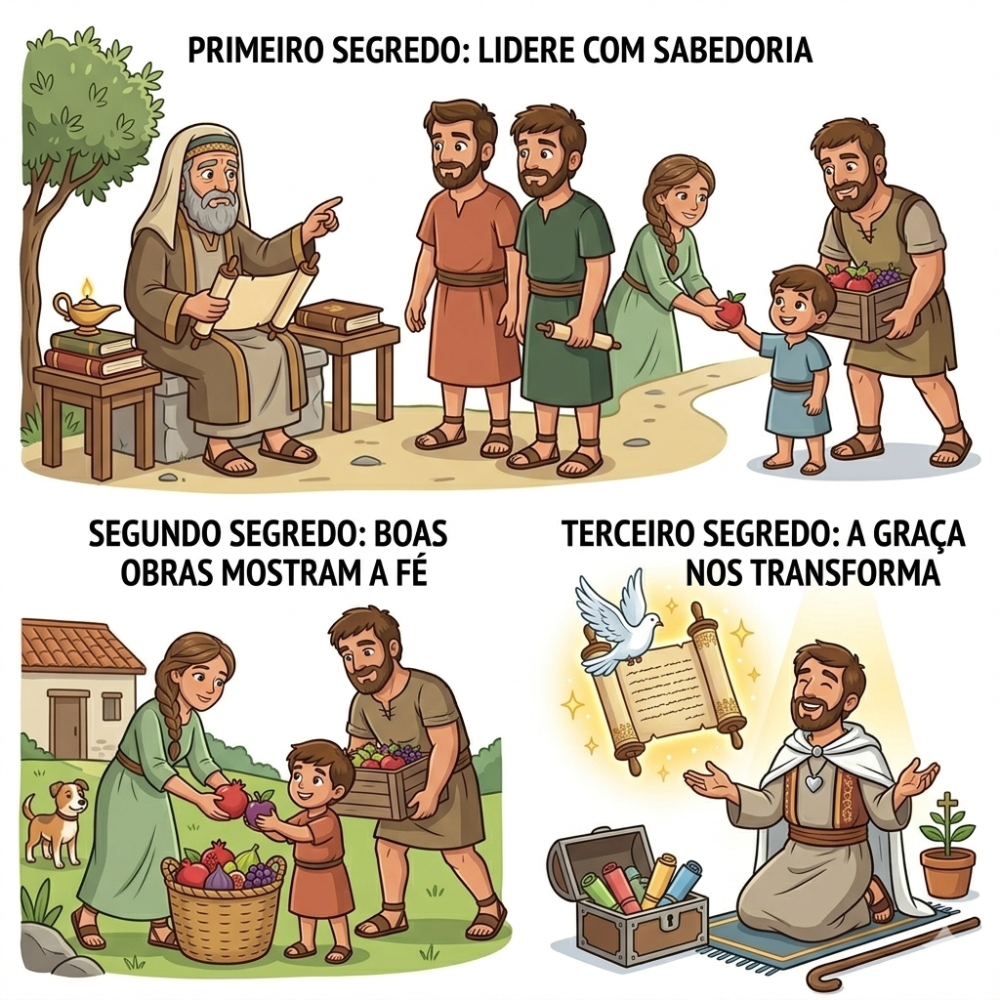
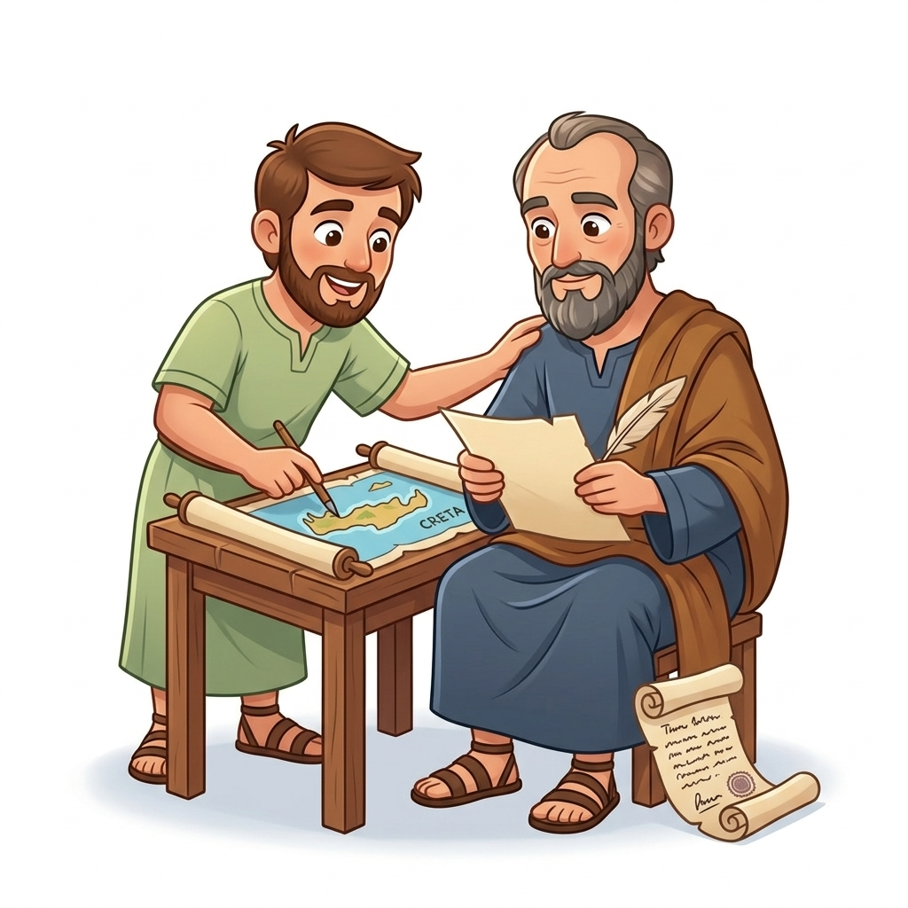
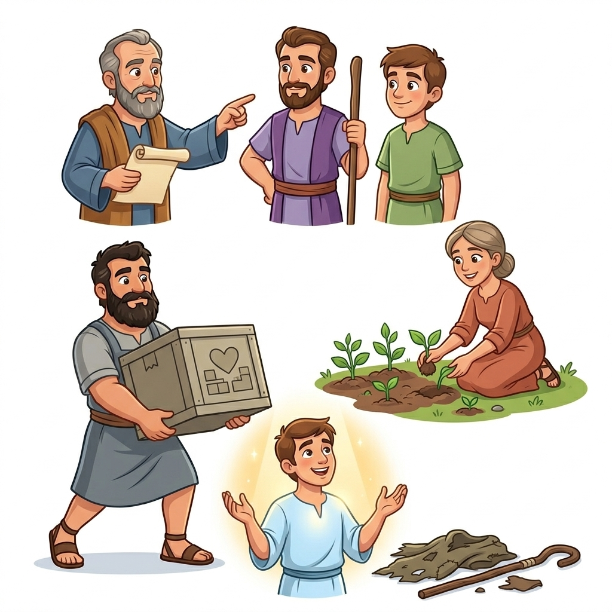
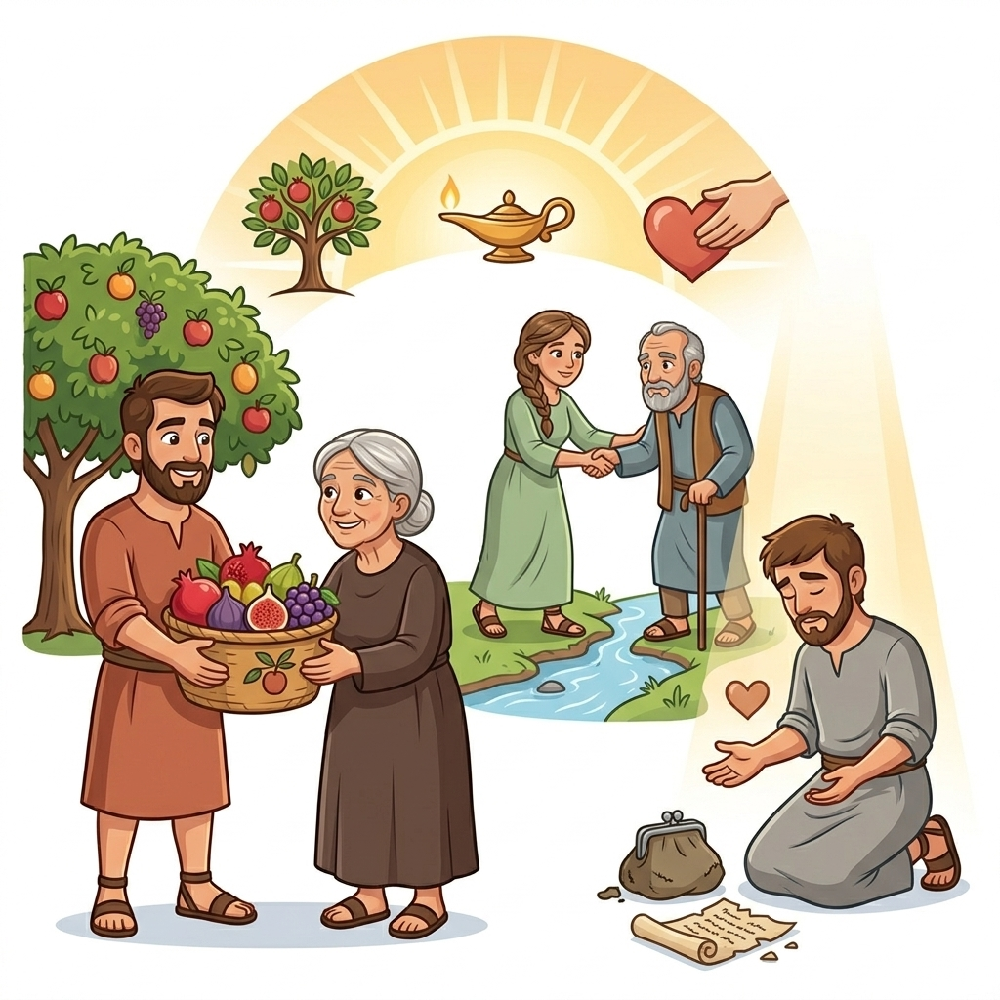
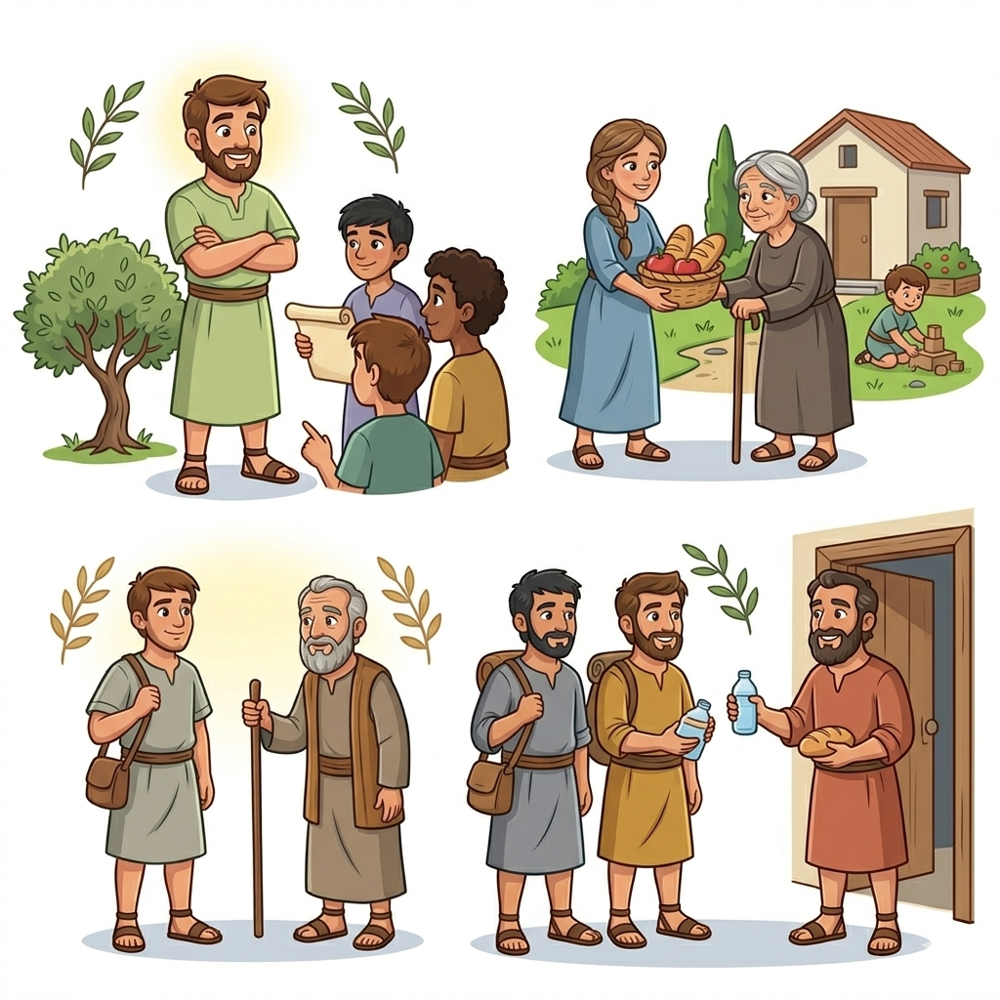

Liderança Sábia e Boas Obras — Um Resumo Visual para Crianças
🎯 Um líder não grita nem manda,
Mas com amor a igreja comanda,
Com palavras firmes e coração gentil,
Guia o rebanho com exemplo sutil!
📖 Tito 1:7-9
🌟 Não basta só dizer que crê,
É preciso mostrar o que se vê,
Ajudar, amar e servir com alegria,
Pois a fé verdadeira se vive todo dia!
📖 Tito 2:7-8
💝 A graça de Deus é um presente especial,
Que muda nosso coração de forma total,
Nos ensina a viver de maneira correta,
E fazer o bem se torna nossa meta!
📖 Tito 2:11-14

Paulo era como um professor sábio que viajava ensinando sobre Jesus. Ele escreveu esta carta para seu amigo Tito, dando conselhos importantes sobre como cuidar da igreja e ensinar as pessoas a viverem de forma que agradasse a Deus!
Tito era um jovem líder cheio de energia e amor por Jesus. Ele ajudava Paulo nas viagens missionárias e foi enviado para a ilha de Creta para organizar as igrejas e ensinar os crentes a viverem com boas obras e caráter exemplar!
Paulo ensina Tito a escolher líderes sábios e respeitosos para cuidar da igreja. Esses líderes precisavam ser honestos, amorosos e bons exemplos para todos seguirem. Era como escolher os melhores capitães para guiar o navio!
A carta ensina que nossa fé em Jesus deve aparecer em nossas ações! Devemos ser bondosos, honestos, trabalhar duro e ajudar os outros. Não basta apenas falar sobre Jesus - precisamos viver como Ele viveu, fazendo o bem todos os dias!


Tito nos ensina que não adianta apenas dizer que amamos Jesus - precisamos mostrar isso! Quando somos gentis, honestos e ajudamos os outros, as pessoas veem que nossa fé é real. É como uma árvore que mostra sua saúde pelos frutos que dá!
O livro mostra que nossas ações são mais poderosas que nossas palavras! Quando vivemos de forma correta, respeitosa e bondosa, estamos mostrando ao mundo como é seguir Jesus. Somos como pequenas luzes que brilham na escuridão!
Paulo escreveu para ensinar Tito (e todos nós!) a liderar com sabedoria e amor. Um bom líder não é mandão ou orgulhoso - ele serve aos outros, ensina com paciência e mostra o caminho certo pelo exemplo. É como ser um pastor cuidadoso do rebanho!
O livro nos desafia a viver de forma que honre a Deus em tudo! Isso significa ser honesto na escola, obediente em casa, bondoso com os amigos e sempre fazer o que é certo. Quando vivemos assim, mostramos que Jesus realmente transformou nosso coração!

Tito não era apenas um ajudante comum - ele era um verdadeiro aventureiro missionário! Ele viajou com Paulo por muitas cidades perigosas, enfrentou tempestades no mar e até ajudou a resolver problemas difíceis nas igrejas. Paulo confiava tanto nele que o enviou para missões especiais!
Tito foi para a ilha de Creta, um lugar cheio de desafios, para organizar as igrejas e ensinar as pessoas. Ele era corajoso, dedicado e amava ajudar os outros a conhecer Jesus melhor. Paulo o chamava de "verdadeiro filho na fé" - que elogio especial!
🌟 Tito nos ensina que nunca somos jovens demais para fazer a diferença no Reino de Deus!
© 2025 - Trilho Kids
Desenvolvido com ❤️ para crianças